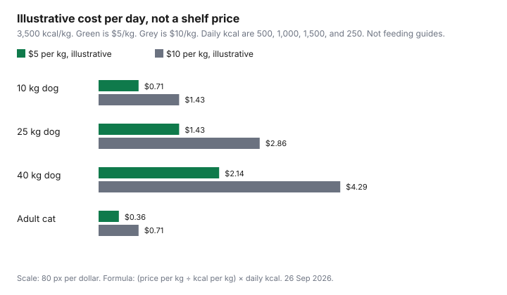

Pets · Canada
Pet Food on Unit Price Without Cutting Nutrition: How to Compare Cost per Day in Canada
A heavier bag with a friendlier price can be the expensive food once you divide by the calories the animal is actually fed. This page is that division. It is not a ranking of brands, and it is not a feeding plan. No Canadian shelf price loaded on 26 Sep 2026, so the worksheet is a template plus one labelled illustration. Nutrition stays with your veterinarian, especially if the animal is on a diet the clinic prescribed. The dollar lines for food on the 2025 Ontario cost sheets, $866 and $1,418 for dogs and $674 and $773 for cats, are category averages. They are not the price of a bag in your cart. Repricing those averages is the dog budget and the cat budget after you have a cost per day.
Disclosure: Pet food sold through Amazon.ca storefronts is an offer type. Saving Optimizer may earn a commission if we later add a partner link. We do not currently claim an Amazon partnership. A storefront link does not change the cost-per-day division. Education only. No brand ranking. This is not veterinary advice.
Key takeaways
- Cost per day equals the bag price, divided by kilograms times kilocalories per kilogram, times the daily kilocalories you actually feed. The bag price alone is the wrong unit.
- AAFCO’s reading-labels page says a calorie statement sits under “Calorie Content,” in kilocalories per kilogram as fed and per cup, can, or other familiar unit. A guaranteed analysis states minimum crude protein, minimum crude fat, maximum crude fibre, and maximum moisture.
- AAFCO’s model rules are not, by themselves, a Canadian statute this draft opened. Use the numbers printed on the bag in your hand. If a veterinary diet says to use it only as the clinic directs, do not swap it on unit price.
- Statistics Canada table 18-10-0004-01, release date 14 Sep 2026, opened as the all-items CPI shell. A pet-food inflation rate was not in that default view and is not invented here.
- The chart uses two made-up prices, $5 and $10 a kilogram, and made-up daily calories. It is arithmetic with a label that says illustrative. It is not a shelf tag.
Why price per bag lies: calculate cost per day from kcal and feeding guides
Two bags can cost the same and feed a different number of days. The missing pieces are the weight, the calorie density, and how much you put in the bowl. Write the price as Canadian dollars. Write the net weight in kilograms. If the bag is labelled in pounds, convert with the factor printed on the package or with 0.4536 kilograms per pound, and say which you used. Find kilocalories per kilogram. If the bag only prints kilocalories per cup, you still need the cup weight or you are mixing a volume price with a weight price. The feeding guide on the bag is the manufacturer’s suggested daily amount for a weight and a life stage. It is a guide. AAFCO’s own page says individual animals differ in activity, genetics, and environment, and that directions may need to change. Your veterinarian’s amount, if you have one, replaces the guide. Do not invent a “normal” intake for your dog and call it the label.
The formula is cost per day = (price ÷ (kilograms × kilocalories per kilogram)) × daily kilocalories. The piece in the brackets is the price of one kilocalorie. Multiply by the kilocalories you feed. A bag that is cheaper per kilogram and much less calorie-dense can cost more per day. A bag that is dear per kilogram and very dense can cost less if you feed fewer grams. That is the whole method. The grocery unit-price guide is the same instinct in another aisle, per kilogram or per litre. Pet food adds the calorie step because a kilogram of one diet is not a kilogram of another. Price-matching a bag without the calorie line is how the bag price wins an argument it should lose. The household price-match guide is for products where the unit is already the same. Use it only after cost per day matches.
Reading labels: AAFCO statements, guaranteed analysis and calories
The Association of American Feed Control Officials’ “Reading Labels” page, opened 26 Sep 2026, is a U.S. model-regulation explanation. The page says the models are not themselves official regulations, that most states adopt a version, and that the U.S. Food and Drug Administration’s animal-food rules apply to products that cross state lines. This draft did not open a Canadian Food Inspection Agency pet-food labelling regulation, so do not read the next sentences as “Canada requires this wording.” Read them as what that AAFCO page says a label is built to show, which is also what you can look for on a bag sold here. If the Canadian bag prints the same lines, use the numbers. If it does not, you cannot complete the formula.
The nutritional adequacy statement, the page says, is usually in small print on the back or side. It is how the product claims to match a life stage. The page says the model regulations recognize the AAFCO dog food nutrient profiles, the cat food nutrient profiles, and the dog and cat feeding protocols as the basis for those claims. A statement that the food is complete for adult maintenance is not a statement that it is complete for growth or pregnancy. Snacks, treats, and supplements are often exempt from the adequacy statement. A product that says it is for intermittent or supplemental feeding only is, on that page, not claiming to be the whole diet. The guaranteed analysis is usually near the ingredient list and, the page says, includes four basics: a minimum percentage of crude protein, a minimum percentage of crude fat, a maximum percentage of crude fibre, and a maximum percentage of moisture. “Crude” refers to the lab method. It is not a review of ingredient quality. Ingredients are listed by weight, heaviest first, and the list does not give the grams of each one.
Calories, the page says, appear under a heading “Calorie Content,” in kilocalories per kilogram of food as fed and per familiar unit such as a can, a cup, or a biscuit. A “light,” “lite,” or “low-calorie” claim has to be a real reduction against a standard product, with feeding directions that match, and the page’s example is that a lite dry dog food cannot contain more than 3,100 kilocalories per kilogram. That ceiling is a claim rule on the AAFCO page, not a recommended intake. Feeding directions for a complete food, the page says, must say at least how much weight of food to give per weight of animal per unit of time. All-life-stage products should give different directions for gestation and lactation, growth, and maintenance. Veterinary medical foods may skip feeding directions if the label says to use them only as directed by your veterinarian. That sentence is the bridge to the next section.
Vet guidance: when prescription or specific diets matter
Unit price compares foods that can do the same job. A diet a veterinarian has prescribed for a disease, a stone, a novel protein, or a calorie target is not the same job as the maintenance bag beside it. AAFCO’s page says therapeutic diets still need a nutritional adequacy statement, and that some are labelled intermittent or supplemental because they limit nutrients below what a healthy animal needs. Swapping one of those for a cheaper complete food because the cost per day looks better can be the opposite of the prescription. Ask the clinic before you change it. This page will not name a condition or a brand that “must” stay. If the label says to use the food only as the veterinarian directs, the unit-price worksheet is how you budget the food you were told to buy, not how you pick a different one.
A healthy adult animal with no prescribed diet is the case where cost per day is the right first sort. Even then, the life stage on the adequacy statement has to match the animal. A growth formula and a maintenance formula are not substitutes because one bag is on sale. If you are unsure which statement fits, that question goes to the veterinarian, not to the cheapest row in the worksheet. The insurance and dental conversations on the other pet guides are separate bills. Food is not a treatment plan.
Store brands vs premium brands at Canadian retailers
No banner’s pet-food price was opened for this draft. There is no winner between a store brand and a premium label, and there will not be a ranked list. The comparison, when you are in the aisle, is life stage, calorie density, and cost per day, then whether you will feed the amount the math assumes. A store brand that matches the statement you need and costs less per day is the cheaper adequate food on that trip. A premium bag that costs less per day because it is dense is also a real result. A premium bag that costs more per day is a preference or a prescription, and you should know which. The store-brand household guide is about paper and soap, where a factory name was also not the point. Do not copy a paper-towel result into a cat food.
Warehouse clubs and discount grocers change the bag size more than they change the formula. The Costco household aisle and the Costco and No Frills split are about whether a large pack gets used. The same test applies to a large pet-food bag: the low price per kilogram is only cheap if the last kilogram is fed while the food is still in the condition the bag’s storage line describes. Amazon.ca is an offer type in the disclosure, not a ranked retailer. If you buy there, run the same formula on the calories in the listing, then confirm them on the bag when it arrives. A listing that omits kilocalories per kilogram cannot be compared yet.
Bag size, storage and waste
A larger bag spreads the price over more kilograms. It does not pause time. The best-before date and the storage sentence on that bag are the limits. This draft did not open a study of how many days an opened bag stays sound, so no “use within six weeks” rule is printed here. If you will not finish the bag by the date and under the storage conditions it prints, price the smaller bag instead. Waste is the other leak. Feeding more than the guide, without a reason you and the veterinarian have, raises cost per day in a straight line. A bowl you fill to the same mark after you switch to a denser food is a quiet increase. Weigh the scoop for a week. Write the grams. Put those grams, not the picture on the bag, into the daily-calorie step.
An opened bag that spoils is a total loss of the remaining kilograms, which makes the apparent cost per day a fiction. Split a very large bag with another household only if you both need the same food and you trust the storage. Otherwise the smaller bag that you finish is the unit-price winner even when the sticker per kilogram is higher. Track the price the way you track any other repeat purchase, with the price-tracking habit if the seller is online, and ignore a sale that does not survive the formula.
A cost-per-day worksheet for a 10 kg, 25 kg and 40 kg dog and an adult cat
Copy the blank rows onto paper in the store. The worked row is not a product. It uses an illustrative price of $5.00 a kilogram, an illustrative 3,500 kilocalories per kilogram, and illustrative daily intakes of 500, 1,000, 1,500, and 250 kilocalories. Those intakes are round numbers so the arithmetic is visible. They are not feeding guides. At $5.00 a kilogram and 3,500 kilocalories per kilogram, one kilocalorie costs $5 ÷ 3,500, which is about 0.143 cents. Times 500 is $0.71 a day. Times 1,000 is $1.43. Times 1,500 is $2.14. Times 250 is $0.36. Doubling the price to an illustrative $10.00 a kilogram doubles each of those days. A real bag will not be these numbers. That is the point of the blank cells.
| Pet | Bag price | Bag kg | kcal/kg | Daily kcal | Cost per day |
|---|---|---|---|---|---|
| 10 kg dog, your bag | From the feeding guide or your vet | ||||
| 25 kg dog, your bag | From the feeding guide or your vet | ||||
| 40 kg dog, your bag | From the feeding guide or your vet | ||||
| Adult cat, your bag | From the feeding guide or your vet | ||||
| Illustrative only, not a product | $5.00 per kg in the chart’s first level | Use the bag you weigh | 3,500, illustrative | 500 / 1,000 / 1,500 / 250, illustrative | $0.71 / $1.43 / $2.14 / $0.36 |
| Line on the bag | What the AAFCO page says it is for | Use it in the formula? |
|---|---|---|
| Nutritional adequacy statement | Life stage and whether the food claims to be complete, based on nutrient profiles or feeding trials. Treats are often exempt. “Intermittent or supplemental” is not a complete diet. | No. It decides whether the foods are the same job. It is not a price. |
| Guaranteed analysis | Minimum crude protein, minimum crude fat, maximum crude fibre, maximum moisture. Crude is a method, not a quality score. | No, unless you are checking a fat claim. Calories are the price input. |
| Calorie content | Under that heading: kcal per kilogram as fed, and kcal per cup, can, or other familiar unit. | Yes. This is kcal/kg. Per-cup figures need a gram weight per cup. |
| Feeding directions | At least a weight of food per weight of animal per unit of time, for the life stage. Veterinary diets may say to use only as the veterinarian directs. | Yes, as daily kcal, unless your vet has given a different amount. |
| Net weight and price | The package weight and the tag you pay. Not an AAFCO nutrition claim. | Yes. Convert pounds if you must, and record the factor. |
| “Lite” or “low-calorie” | A regulated-style reduction. The page’s dry-dog example cannot exceed 3,100 kcal per kilogram. | Only as a check that a lite claim is not a dense food. Still use the printed calories. |

Sources & date stamps
- AAFCO, Reading Labels, opened 26 Sep 2026. Adequacy statement, guaranteed analysis (minimum crude protein and fat, maximum crude fibre and moisture), calorie heading in kcal per kilogram as fed and per familiar unit, feeding directions, lite dry dog food example not more than 3,100 kcal per kilogram, veterinary foods that may say “use only as directed by your veterinarian.” The page says the models are not themselves official regulations. No Canadian pet-food labelling statute was opened.
- Statistics Canada table 18-10-0004-01, Consumer Price Index, monthly, not seasonally adjusted, release date 14 Sep 2026. The default view did not provide a pet-food series. No pet-food inflation rate is stated.
- Illustrative worksheet: $5 and $10 per kilogram, 3,500 kcal per kilogram, daily kcal 500, 1,000, 1,500, and 250. Results $0.71, $1.43, $2.14, $0.36 and double at $10. Not a product and not a feeding guide. No retailer price was opened, so none is ranked.
- Ontario Veterinary Medical Association 2025 sheets, food lines only, for context: puppy $866, adult dog $1,418, kitten $674, adult cat $773. Those are not bag prices.
Frequently asked questions
How do I compare pet food prices fairly?
Use cost per day, not the sticker on the bag. Divide the price by kilograms times kilocalories per kilogram, then multiply by the daily kilocalories you feed. The feeding guide or your veterinarian supplies that daily amount. Two bags are comparable when the life stage matches and you will finish the bag under its own storage line. No Canadian shelf price was opened on 26 Sep 2026, so this page does not declare a winner. The worked numbers at $5 and $10 a kilogram are illustrations.
Where do I find calories on a pet food label?
AAFCO’s Reading Labels page, opened 26 Sep 2026, says the statement is under a heading called “Calorie Content,” in kilocalories per kilogram as fed and per cup, can, or other familiar unit. If you only have a per-cup number, you still need the weight of that cup. The guaranteed analysis beside it is protein, fat, fibre, and moisture, not the calorie line. A Canadian labelling regulation was not opened here. Use whatever calorie line is actually printed on your bag.
Is expensive pet food healthier?
This page cannot say. No feeding trial and no brand comparison was opened. A higher price per day is not evidence of better nutrition, and a lower price per day is not evidence either. Match the nutritional adequacy statement to the animal’s life stage, then compare cost per day among foods that make the same claim. If a veterinarian has prescribed a diet, the health question is settled by that prescription, not by the unit price. AAFCO notes that some therapeutic foods are not complete diets for a healthy animal.
Are store brands safe for my pet?
No safety ranking was opened, so this page does not clear or condemn a store brand. Look for the same adequacy statement and the same calorie line you would require of any other bag, then run the cost-per-day formula. A store brand that lacks a calorie figure cannot be compared yet. Household store-brand tests on paper towels do not transfer to pet food. If the label tells you to use the food only as your veterinarian directs, follow that instead of the cheaper tag.
When should I stick with a vet-recommended diet?
When the veterinarian has recommended it for your animal, and when the label says to use it only as directed by your veterinarian. Those foods can be budgeted with the cost-per-day formula so you know the monthly hit. They should not be replaced by a cheaper complete food on unit price alone. AAFCO’s page says some veterinary diets limit nutrients below the level for a healthy animal and may be marked intermittent or supplemental. Confirm any change with the clinic. This guide does not name a diet to keep or to drop.